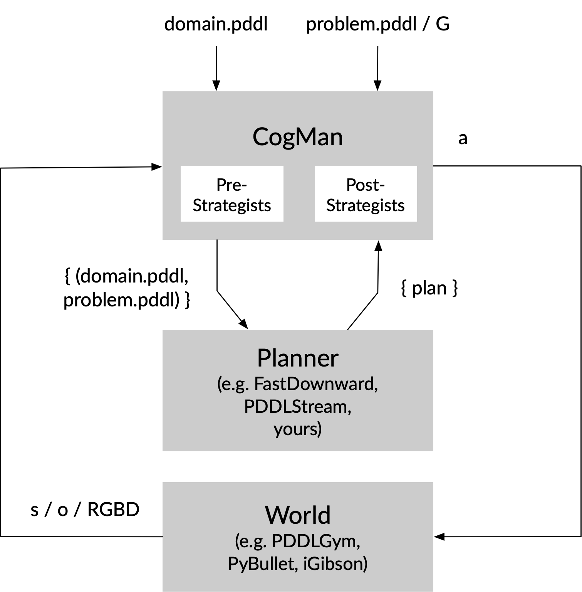

LEAP (Learning-Enabled Abstraction for Planning)#

- CogMan: cognitive manager that employs strategists and commonsense knowledge to solve big, complex problems
- Pre-problem Strategists: a sequence of (learned) components that map a big problem into a sequence of smaller problems by making hierarchical or temporal abstractions
- HPN: (v1) relax preconditions with fixed hierarchy (v2) with learned importance score
- PLOI: (v1) find minimum set of objects at the beginning of solving the problem (v2) change the set dynamically
- C2S2 (context-conditioned subgoal suggestor): (v1) with 3-gram models (v2) with language models
- Post-problem Strategists: a sequence of components that improve a plan
- VNS: to change the order of operators, e.g. open the fridge only once to get both the meat and cheese
- Pre-problem Strategists: a sequence of (learned) components that map a big problem into a sequence of smaller problems by making hierarchical or temporal abstractions
Usage#
Run run.py with the domain and problem pddl files, along with the sequence of strategists to use. The code searches for the pddl files in all sub-directories of domains/.
## the general template
python run.py domain.pddl problem.pddl
-o 'large_domain_objects.pddl'
-p [fd/pp]
-s 'hpn,c2s2,pre-strategists separated by comma'
-v [0/1/2]
-e 'experiment_output_directory'
## this should work and generate an output dir with plan and log in experiments/dev
python run.py kitchen_1.pddl omelette_5.pddl -o obj_3.pddl -v 2 -e 'experiments/dev'
## this needs to run successfully for every new version of the code and domain files
./tests.sh
Note that kitchen_3.pddl and obj_eggs.pddl are currently being actively developed for a larger kitchen domain.
Helper functions:
## post_experiments.py prints a table of experimental stats in directory
python generators/post_experiments.py experiments/kitchen_operators
## init_objects.py converts doc/objects.md file to PDDL tuples of types and objects
python generators/init_objects.py
Available Planners#
df: FastDownward with lama-first. Better than PyperPlan in that it can take ADL expressions for using forall/exists/when. It also supports action costs and axioms (seedownward/driver/aliases.pyand Doc/Evaluator). But it doesn't support PDDL 2+ and 3+ features, like fluents, numerical planning, temporal planning, soft goals & preferences.
ALIASES["lama-first"] = [
"--evaluator",
"hlm=lmcount(lm_factory=lm_reasonable_orders_hps(lm_rhw()),transform=adapt_costs(one),pref=false)",
"--evaluator", "hff=ff(transform=adapt_costs(one))",
"--search", """lazy_greedy([hff,hlm],preferred=[hff,hlm],
cost_type=one,reopen_closed=false)"""]
pp: PyperPlan with Greedy Best First Search and FF heuristic
Available Strategists#
hpn,ploiorc2s2: output the original domain and problem pddl
Domains#
In this project we focus on robot doing everyday household tasks instead of puzzle-like IPC domains (e.g. in FF Domain Collection and IPC2018 domains.
Some of my thoughts
- Partial observability: doing the laundry requires finding dirty clothes in the room until no more can be found (as opposed to knowing how many clothes are dirty and where they are)
- The domain knowledge should be robot agnostic, i.e. same basic domain knowledge for robot with one arm and two arms
- Some aspects of the household tasks that are unable to do with PDDL 2.1 / FastDownward:
- Some actions need to be prevented, like putting down a fork on the table instead of a burner because the burner would burn the fork, but because the way that axioms are derived, it cannot keep track of the fact that the fork has been burnt. so for now we write the surface must be safe to put the fork on
Kitchen domain#
(exist-egg-in-hole ?x - env)
(exist-poached-egg ?x - env)
(exist-baked-egg ?x - env)
(exist-boiled-egg ?x - env)
(exist-deviled-egg ?x - env)
(exist-cloud-egg ?x - env)
(exist-quiche ?x - env)
Experiments#
Write your test script like test_goals.sh with all test cases.
You can also add the following lines to tests.sh:
chmod +x test_something.sh
./test_something.sh